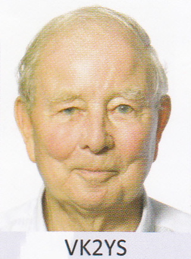

Flash ! Flash ! Flash !

 To all participants to SEANET YOKOHAMA 2013. To all participants to SEANET YOKOHAMA 2013.
A fun time goes by very quick.
It comes the final moment of the meeting today.
We appreciate your joining to the SEANET YOKOHAMA 2013 very much.
All programs went on very smoothly with your kind cooperation and understanding.
We hope to see you again all of you in Bali next year and wish you give hands to Indonesians group to make their convention successful.
Again, the SEANET YOKOHAMA 2013 staffs appreciates to all of you very much.
You take care and have a safety flight back to your home.
88/73
~~~~~~~~~~~~~~~~~~~~~~~~~~~~~~~~~~~~~~~~~
To All participants from abroad.
The weather during the convention in Yokohama looks better shape than that of previous forecast.
http://www.jma.go.jp/en/week/319.html
On 5th , It is going to be little cooler HOT 21C+/-2C/COLD 17C+/-2C with partially raining.
On 6-7th, Temp. goes up to HOT 25C+/-2C/COLD 19C+/-2C with partially fine.
It is not the best weather but not the worst.
However, I recommend you to bring light jackets and an umbrella with you.
Have a nice flight and our colleagues welcome you at the arrival exit of the airport.
See you in Yokohama.
~~~~~~~~~~~~~~~~~~~~~~~~~~~~~~~~~~~~~~~~~
To All participants of SEANET YOKOHAMA 2013 from abroad.
(1)Weather in Yokohama/Tokyo areas.
A typhoon will graze central Japan in two days, but, it will effect a little to the
weather in Yokohama on the 5th of October.
Your flight wonÅft be bothered by the typhoon.
The weather forecast during the convention is on the website below;
Please look at the site and be careful to choose your closes and belongings.
http://www.jma.go.jp/en/week/319.html
(2)DonÅft forget to bring your radio license if you are one of them,
As I have announce you in my previous e-mail that those people who have any amateur radio licenses issued by counties which have bilateral agreement with Japan on amateur Radio operation, can operate special station called 8N1SEA from Yokohama during the convention.
We will setup with 4 radios and a tower in the parking area next to the NAVIOUS hotel.
Those people who are not nationalities listed in the agreement, can also operate the station if you have any ham radio licenses issued by countries which have the bilateral agreement with Japan as well.
(3)LetÅf meet JA ham operators at the arrival exit of individual flights.
They will guide you to the hotel till check-in.
Have a nice flight to Japan and enjoy SEANET YOKOHAMA 2013.
We welcome each one of you to the city of Yokohama very much.
~~~~~~~~~~~~~~~~~~~~~~~~~~~~~~~~~~~~~~~~~
While you are in Japan, you may be interesting.....
To all participants from abroad.
I would introduce a particular site for people from abroad which provide information you to expand your travel experiences in Japan.
It probably a good idea to challenge some Japanese way of living or our cultures during your stay in Japan.
Check the website below.
http://www.deepjapan.org/
Have a nice trip to/in Japan.
~~~~~~~~~~~~~~~~~~~~~~~~~~~~~~~~~~~~~~~~~
BREAKING NEWS: Operation from Yokohama as 8N1SEA
Ladies & Gentlemen,
We are very happy to inform you that those people who has amateur radio license issued by counties which have bilateral agreement with Japan on amateur Radio operation, can operate special station called 8N1SEA from Yokohama during the convention.
We will setup with 4 radios and a tower in the parking area next to the hotel.
Those people who are not nationalities listed in the agreement, can also operate the station in which you have license issued by countries which have the bilateral agreement with Japan as well.
If you were one of them, do not forget bring your license with you.
The countries which has the agreement with Japan are as follows.
USA, Australia, Canada, Germany, France, Korea, Finland, Ireland and Peru.
Please pass this info to your member of delegation.
Regards,
~~~~~~~~~~~~~~~~~~~~~~~~~~~~~~~~~~~~~~~~~
The SEANET Contest 2013 Results
~~~~~~~~~~~~~~~~~~~~~~~~~~~~~~~~~~~~~~~~~
 *** We are so sad to inform you that VK2YS/Paul Hunter had passed away.
He was one of old member of SEANET for many years.***
~~~~~~~~~~~~~~~~~~~~~~~~~~~~~~~~~~~~~~~~~
We are going to carry out FCC exam after the lunch of October 7th.
Please inform us if you will take exam on that occasion. Drop
a line to seanet@arion.ocn.ne.jp
This FCC exam is not official of SEANET 2013
~~~~~~~~~~~~~~~~~~~~~~~~~~~~~~~~~~~~~~~~~
Now QRV 8N1SEA/P !!
also we will QRV from The Amateur Radio Festival (2013 Ham Fair)
of August 24th to 25th at "TOKYO BIG SITE" (Ariake Tokyo).
|